Supply Chain Innovation Summary
University of Cologne winter semester 2017/18
Pascal Brokmeier
Overview
The class focuses on the innovation process within the supply chain of businesses. This broadly includes the entire product and service offering of a company as well as their improvement and innovation. The lecture is structured along the Pentathlon Framework which is depicted below. At the end of each chapter, review questions are posed (by the professor) and answered (by me). At the end of the document, I will collect a list of terms which need to be known and hence should be memorized.
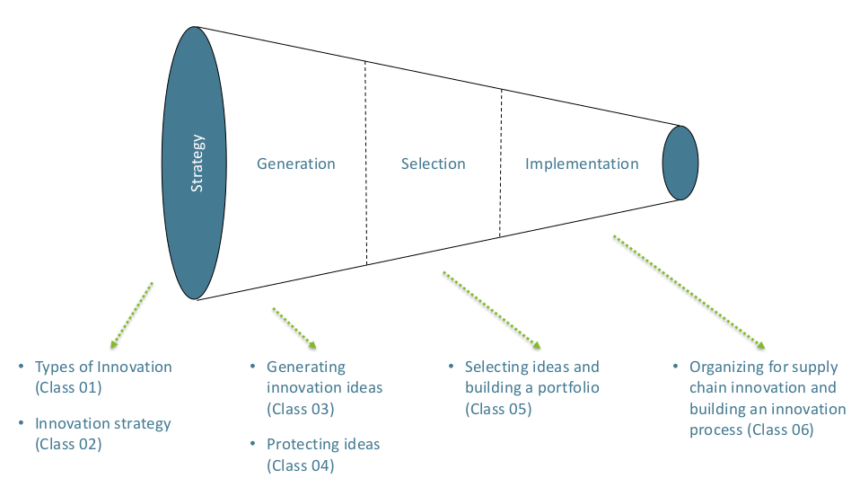
Chapter 1: Types of Innovation
What is Innovation?
- Needs to be distinguished from creativity and inventions
- linked to the idea of markets (hence demand and supply)
- encompasses the entire process from the inception to the introduction and marketing of a new product/service/business model
How to measure Innovation? Such a loosely defined concept is difficult to measure and quantify. Several proxies can be choosen such as patents, R&D expenses or new product introductions. However, all those proxies suffer from common issues. While they are certainly all correlated with the innovation performance of a firm, the extend of the correlation can vary strongly. Some companies might not file patents. Some only focus on very few products. Some might have no explicit R&D cost as they have a culture of innovation that leads to each employee suggesting improvements.
Innovation Dimensions and Degrees
4 Dimensions: Products, Services, Production and Business Processes.
Generally, it's also a difference whether a firm innovates it's process of production (or service) or its actual product.
3 Degrees: Incremental, Breakthrough and Radical Innovation
Generally, radical innovation is (obviously) more risky and rarely, projects aiming at radical innovation are on time, budget, spec and satisfy the customers demand. Hence, common patterns of budget allocation for the three kinds are 70:20:10.
The Innovation Process and the Pentathlon Framework
The Pentathlon framework describes a funnel of filtering out many initial ideas to only select those with the highest chance of succeeding. To ensure innovation can succeed it is not only important to facilitate it by supplying all the necessary resources and create an environment that is open to innovation but it is also necessary to select and refine ideas and projects.
Recent years have shown shifting areas of focus for research into innovation management. While the Stage Gate Model has been one of the most popular frameworks in the mid 90's, the interest has shifted towards more progressive ideas such as:
- cultures of Innovation
- disruptive Innovation
- business model Innovation
- Open innovation
especially the last field has seen large interests in recent years.
Innovation in Manufacturing vs. Services
Services are different from manufacturing as they don't output specific products. They are often:
- Intangible: Meaning they have no physical representation.
- Customer contact intense: Customers interact (often virtually / digitally) with the firm. New products require new approaches to the interactions with the C
- Inhomogeneous: Because services are easily customizable, it is important to ensure each customer segment receives the tailed version of the service offering.
- Perishability: Services don't have a time lag between production and delivery. A performed service is instantaneous, taking away any safety stocks possibilities.
Review Questions
- Conceptually, delineate innovation from (i) creativity and (ii) invention
- Innovation involves an entire process from start to finish, meaning not only to come up with a creative idea (i) but also to develop and construct it (ii) and then finalize it to allow delivery to the customers. It also requires ensuring a market for the product exists and it requires communicating the new product to potential customers.
- How do product innovations relate to process innovation in chronological terms?
- Product innovation usually comes first. A new product gets developed and enters the market. Afterwards, the process of it's creation or delivery can be optimized.
- Compare product innovations against process innovation by using the generic innovation funnel. Explain commonalities and differences.
- Process innovation is much easier to evaluate but much harder to generate. A well optimized process does not spawn many ideas for further improvements. However, once a potential improvement has been identified, it is much easier to evaluate the benefits and act upon it. A new product idea is quickly developed (many people have ideas, only few have great ones), but it requires consistent and strict filtering and selection to ensure the investments will pay off. While a process is a simple cost/utility calculation + a feasibility evaluation, a new product must also be evaluated regarding potential customer interests, feasibility of the whole supply chain and many other limiting factors.
- Provide an example for an organization caught in the “Incremental Innovation Trap”. Why did that organization get caught in there?
- Nokia: The best phones of around 2005 were all made by either Motorolla (high end business class) or Nokia (large market share of mainstream). However, both failed to embrace the change in technology and did not adapt to the new trend of touch based modern modular app based OS platforms. Android and iOS wiped them both off the playing field.
- Why they got caught can only be guessed. Their technologies were good, highly refined and efficient. But their views were too strongly locked onto their point of view, meaning they couldn't see the benefits of the new products over their own. While they had strengths, the new competition had other advantages that answered the demand of the customers better. Once they tried to catch up, the technology gap between them and Google/Apple was too large to recover. Nokia tried with MS but even the software giant could not compete anymore.
- How can “Incremental Innovation Trap” be explained by risk taking behavior?
- If the organization as a whole is risk averse, the willingness to approach a radical innovation may be low. If one applies the 70:20:10 rule, it is even worse, as only 1/10th of the overall R&D budget is applied to high risk projects and most of them will not succeed. It therefore requires conscious efforts to assure continuous investment and improvement upon all efforts to avoid irrational risk averse behavior and to ensure eventual success with radical innovation.
Chapter 2: Innovation Context and Strategy
Innovation in Context
Adoption and Diffusion
- Some few adopters pick up on the product in the first phase of the release. If this point can be exited with a velocity of success, a typical adoption curve can be observed until the market is saturated
Technology S-Curves
As an example of technology development, the bicycle has slowly been emerging (1815 - 1861) for quiet a while. It has then seen rapid improvement in performance (1885 - 1895), after which it has been dormant for a long time (- 1970's) at which point innovation was retriggered by new materials and a new market demand for trendy styles.
The curve is accompanied by 4 phases:
- emerging
- Understand tech, find adopters, gain experience, advertise
- pacing
- demonstrate skills, find limits, standardize, respond to feedback, learn
- key
- improve performance of product, master tech, grow market share
- base
- be reliable, affordable, be known and respected (marketing), diversify / complement
Dominant Designs and Punctuation
The Need for an Innovation Strategy
If a company needs to improve its performance, it is helpful to NOT
- have everyone either try new things all day without any goal or leadership
- or have 50 people always doing the exact same thing over and over again without looking to serve the customer better and ignoring competition
Competitors WILL BECOME BETTER hence, a company must also improve its own performance. This is best done with:
- a clear set of goals
- a process of reaching those goals, given
- approaches that can lead to the reaching of the goals
So we need: Ideas, development of these ideas and pulling through. If there are too many ideas, you need to choose the right one.
Scenario Planning
Come up with a few dimensions of future developments of the environment:
- Bitcoin rises, falls
- Artificial Intelligence becomes more important, less important
- Jobs in AI become: more / less abundant ...
Road Mapping
- Time on x, different levels of abstractions / lanes
- it's more about the process of thinking abuot these things than about the roadmap itself.
Kano Model and Matrix
- The kano matrix however can only show what customers want not technology can provide. If tech boundries/limits exist, the model is useless.
- Many features move from a delighter to a basic feature, which is expected to exist in every instance of a product class. Cameras used to be a feature for phones and something special. These days, no one buys a phone without a camera.
Strategic Canvas
- Depending on the market in which a company competes, very different strategies can be employed. IT consulting firms often cooperate to serve large customer demands as there is no limiting amount of demand. There is "enough for everyone", hence they try to work together to reach all customers instead of trying to steal customers from each other to increase their market share.
Disruptive Innovation Strategies
Disruptive innovation (aka Christensen Model) is:
- a late discovered Technology
- that performs less well in some key dimensions
- that might offer some additional performance dimensions that previous tech didn't offer
- which quickly gains performance in key dimensions and exhibits a faster performance gain \(\Delta\) than the previous tech
This images neatly shows the difference between staying in the same technology landscape and innovating there vs. completely shifting to a new technology space and introduce a new product in this environment. An example can be made of the horse coaches and automobiles. No matter how good of a horse-breeder you were, once Fords came rolling around the corners, you lost your market.
A case can be made for the following:
- Performance oriented firm: Focus on adaption strategies
- Competitor-oriented (Market): Focus on disruption strategies
Review Questions
- What is the conceptual difference between technology S- curves and diffusion curves?
- S curves talk about the rate of innovation usually observed in the underlying technology and process environment. Diffusion curves talk about the adoption rate of a product by customers
- What is the relation between diffusion and adoption curves?
- the diffusion is the integral \(\int\) of the adoption function
- How do Technology S-curves affect the Kano model analysis for products relying on mature technologies? Explain briefly.
- Mature technologies usually exhibit all the key features expected by the customers. Therefore, it can help to discover discrete features that are not needed or may be replaced by a merged superset. Costs can be saved by combining many features into one solution that covers all or by cutting those features that aren't used by the main body of the users.
- At which stage of a technology S-curve is the emergence of a future dominant design most likely? Explain why.
- During the core functionality phase. Here, the largest success points of a product are discovered. The automobile is not successful because of the color of the radio buttons nor because of any one firm to push their brand image. It's successful because of it's key features (transportation, mobility, ...)
- Discuss whether (or not) Tesla’s Model 3 is a disruptive innovation.
- It might. If it can actually achieve what it is promising (mass production, low CO2 footprint, long-lasting functioning of the battery system) it can compete well with current cars. Current developments however give little hope that this will actually be the case. Car manufacturing simply is not as scalable as software products are. While it shook the market, it will not displace other competitors or grab a significant part of the market as others are also going to supply similarly competitive products.
- How do firms’ performance benchmarks affect their technology strategy choices? Why so?
- If they benchmark themselves against their previous years performance, they are fighting their own highscores and not those of the market. Other competitors might radically innovate and completely outperform the firm.
Chapter 3: Generating Ideas for Innovation
1. The “Fuzzy-Front-End” of Idea Generation
Reiterating on the Pentathlon Framework, we look at the first part of the 3 steps: Idea generation
Sources of ideas are:
- Internally generated (46%)
- customers (23%)
- competitor immitation (11%)
- sales force, university, contractors, partners, supplier, ...
Key benchmark factors:
- Number of ideas generated
- Average \(\mu\) quality of ideas generated
- Variance \(\sigma\) of ideas generated
- The ability to select the best ones
2. Individual Ideation
Pareto principle strikes again: 80% of the best inventions come from 20% of the inventors. This makes sense. If "having ideas" is a skill, then the best at this come up with the majority of good ideas.
3. Collaborative Ideation
The infamous "brainstorming": Getting many ideas by many people and trying to cause cross-individual inspiration
Osborn's SCAMPER
- Substitute: Replace module, partner, product, source
- Combine: subcategories, factories, offers
- Adapt: ...
- Modify (Magnify, Minify)
- Put to other uses
- Eliminate
- Rearrange
There are more techniques for brainstorming methods. All of them aim towards generating many ideas based on adaption and reshuffling. None specifically aim for disruption though.
Dark sides of brainstorming
- idea blocking
- inefficient (1 speaks, rest listens)
- free riding (group results may feel like partially own contribution)
- groupthink and conformity
4. Identifying Hidden Needs: Lead User Theory
Users of a product range from casual users to high intensity users. iPads are used from playing card games on the couch all the way to complex educational system setups and professional artists.
Tapping into these lead users competencies can help a firm to find the needs of the larger population. The lead users can easily spot the "deligthers" (Kano model). The downside is the possible overengineering of a product. Too many features can scare off new users. Steep learning curves are the result of such innovation cycles.
Review Questions
- Why can specific individual ideators be highly valuable for companies?
- Because some few ideators often have the majority of good ideas. This is simply explainable if the "having ideas" activity is seen as a skill and every idea is a highscore or a lap record. The best usually lead the tables and equivalently, they lead the list of best ideas.
- How does, ceteris paribus, an increase in number of ideas generated affect the quality (i) of the best idea and (ii) of an average idea? Explain.
- Generally, it depends on the process of increasing the number of ideas. If all other parameters stay the same, yet the individuals simply generate more ideas, statistically the chance of a positive outlier is higher. However, assuming the better ideas are shared earlier and the worse ideas are not shared or only shared when prompted, the overall quality is likely to suffer.
- How does brainstorming (Osborn) make use of lateral and vertical thinking?
- It confronts the individuals with all the dimensions of a product and a competency and asks them to adapt and evaluate these adoptions on many different dimensions.
- How can hybrid structures help overcome problems with traditional brainstorming? (Use two problems of the traditional approach).
- inefficiency: Initially, everyone generates ideas by themselves. This increases the total number of ideas
- group-think: Because all members generate ideas in solitude, they generate them independent of the others. Only in the following steps, everyone gets introduced to the others ideas. Of course, this phase is still prone to group-think.
- Instead of average customers, the lead user approach focuses on extremely demanding customers. Why?
- because they usually know what features will make the product have a competitive advantage / a performance benefit and they can describe exactly where products have strengths and weaknesses
- How does the lead user approach incorporate “normal” users?
- It brings many lead users of different product groups together. Some users are lead users in one domain but normal users in other domains. Hence, the lead users are confronted with the views of normal users who are specialists in other domains.
- Reflect the lead user approach (coined by E. von Hippel) against disruptive innovation (coined by C. Christensen). Are there contradictions? If so, how can they be reconciled?
- Lead users might may be prone to adding "unneeded bells and whistles" to a product instead of focusing on the next iteration of product disruption. They are focused on their specialist skill-set and the domain in which they work. However, they might sometimes be able to see ways in which a subset of their favorite products be combined to one uniform product that can serve all their needs.
Chapter 4: Protecting Ideas
Introduction to Intellectual Property Protection
- Intellectual property is an intangible asset and one of the most powerful assets for companies
- average value of Fortune 500 firms: 45-75% IP based
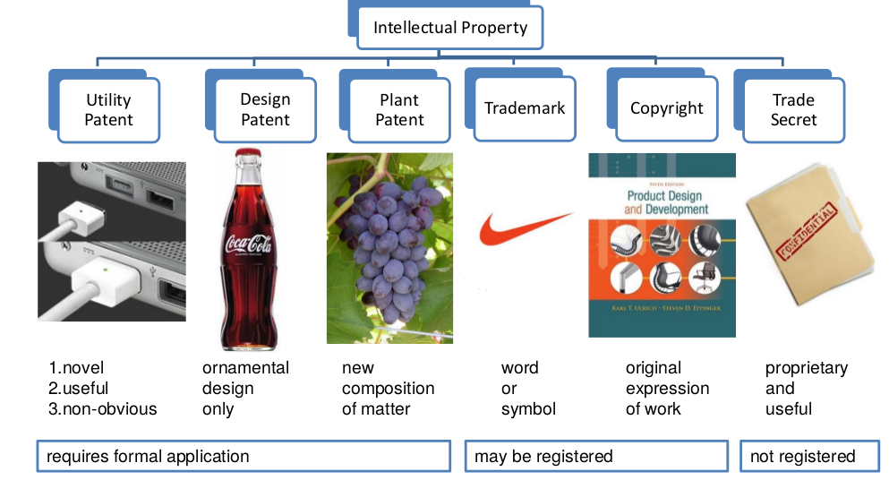
Patents and Patenting
- patents require detailed disclosure (description of functioning )
- delivers right for exclusive use (within range of patent office applicability) for limited time
- idea must be: novel, practical, inventive
- idea may not be:
- scientific theory
- mathematical methods or models
- ways of doing business
- ...
Advantages of patenting are the exclusive rights of usage and the ability to license it to competitors as well the expression of competency. Disadvantages range from the long period until a patent is granted, the costs as well as the revelation of the technique to competitors. Costs can range from 6.000 to a 500k for a worldwide coverage.
Current Research: Patenting Strategies in Innovation Races
What is the "right" patenting strategy? What should be patented? What should not be patented? What market environment invites patenting and what prohibits it? What are the motives behind the invention?
Strategic Issues Pertaining to Patenting
Different strategies of patenting can be defined
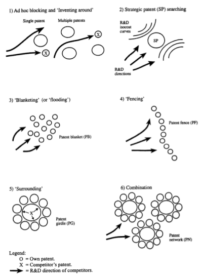
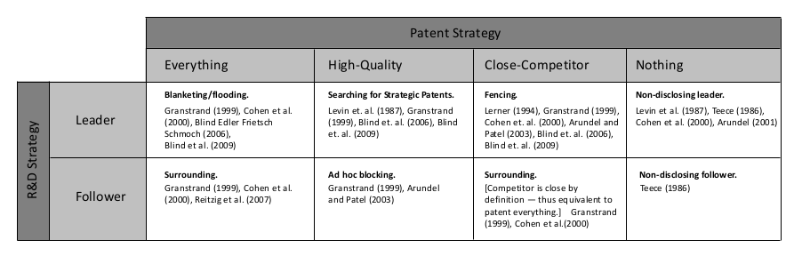
R&D and Patenting Strategies on Technology Landscape
Paper written by Sting models and simulates situations of competing firms and their patenting strategies. The technology landscape is described as a n-dimensional continuous space. The space holds a complex polygon which describes the paths of research to reach local (or global) maxima.
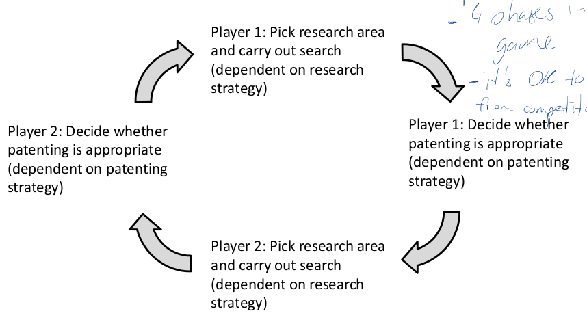
The simulation works by performing many rounds of the game, each round consisting of each player investing into R&D and progressively improve their competencies. Afterwards the player can decide whether to patent or not to patent based on different strategies that are again modeled based on the algebraic properties of the model.
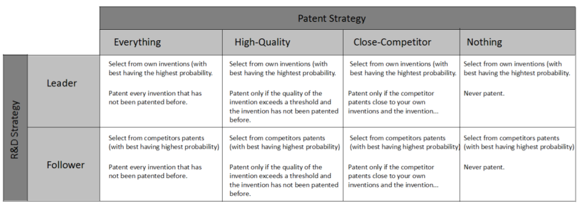
If both players are "leaders" meaning their R&D strategy is better and therefore they perform better in their R&D efforts, a mixed strategy Nash-Equilibrium results. A leader vs. follower game is quickly observable to have a pure-strategy Nash-Equilibrium, as the "patent nothing" strategy by the leader dominates all other strategies.
Review Questions
- What are the basic trade-offs in patenting?
- information disclosure vs. exclusive usage rights
- Should an R&D leader always patent?
- No, a leader should follow a mixed strategy during a competition with another leader and shouldn't patent anything if he is the sole leader in the market.
- When and why may “High-quality Patenting” backfire?
- If the competing firms do not patent anything and if they are either less performing than the own firm or if both firms are followers
- How can “Patenting Everything” harm competitors?
- If two leaders compete and the competitor is not patenting anything, patenting everything blocks off access to the competitor but the own firm may keep using the same tech as the competition.
- Why should a R&D leader competing with an R&D follower better rely on secrecy instead of patenting?
- Because the follower will otherwise use the patented technologies as a base from which to perform it's own R&D and therefore quickly jump from it's own tech base to the technology level of the leader.
Chapter 5: Selecting Ideas and Building Portfolios
Idea Selection
Going back to the Pentathlon Framework, the second phase, the selection and prioritization, requires approaches towards filtering the (vast) number of ideas and only select and pursue those that have a high chance of succeeding. As is the nature with ideas, measuring the future success is impossible, as success is based on attributes that cannot be measured before the implementation. So concepts focus on expected performance and relative ratings by comparing ideas with each other.
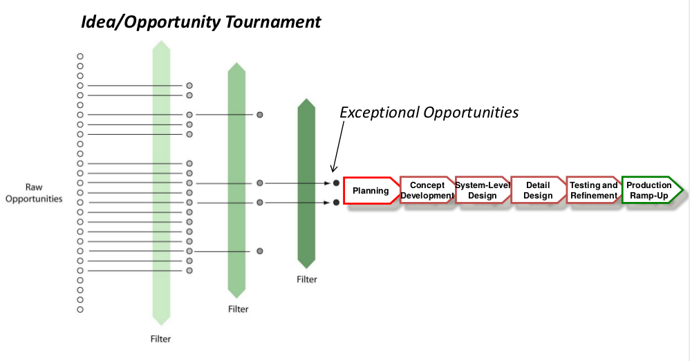
While more ideas generally lead to a higher grade of the best idea, finding this best idea in all of the generated ideas becomes harder with an increasing number of competing ideas.
Qualitative Methods
Questions that might be asked:
- is the opportunity real? Or is it targeting potential future environments?
- Can you win? Will others be better?
- Is it financially sustainable? Do you have the resources?
Dupont and 3M have deployed scoring models to rate an idea based on standard questions about "value", "attractiveness", "Fit to existing SC", ...
Quantitative Methods and Real Options Logic
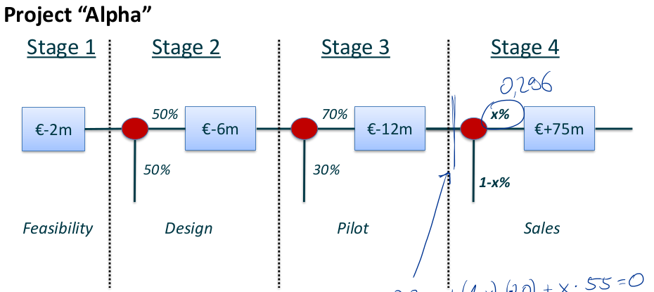
Real options logic: Make several small investments that deliver evidence of success or failure likelihood. According to information theory, the information for a "will produce profit X" is worth the same as the likelihood * expected profit.
Using Innovator Knowledge (Ongoing Research aka "Innovators Bias")
- How likely are you to over (under) rate your own invention?
- Will you even share it? Or will you overrate your benign ideas?
- Who are the people choosing the best ideas? Are they adding bias to the selection process?
Paper looks at different stages: - Ideator's estimation of the idea value - Accounting E(V) (expected) - Accounting R(V) (realized)
It also looks at how different levels in the hierarchy influence the innovators bias.
Portfolio management
Similar to financial portfolios. Finding a balance between risk and costs. Some investments are a big bargain and bring with them a large risk but large possible rewards while others give steady rewards for steady cost. But how to decide how much of each? Which type should receive how much attention, financial backing and trust?
Strategic Buckets Approach
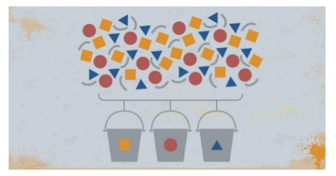
- Define a set of innovation domains, or strategic buckets, each corresponding to a combination of market and technology novelty.
- Allocate resources across the buckets, reflecting their importance in supporting your business strategy.
- Select the best opportunities/projects within each bucket.
Review Questions
- What are advantages and disadvantages of using innovator knowledge for process idea evaluation and selection?
- Pro: The innovator is the best person to understand the idea and describe it's functionality and ability to perform. He came up with the idea and therefore knows it the best
- Con: The innovator is likely biased towards believing the idea is a good one. He would not have introduced it if he didn't believe it was a good idea. Hence, the questions about the quality of the idea should not be answered by himself.
- At what stage of innovation are qualitative (resp., quantitative) innovation evaluation methods more adequate? Explain why.
- quantitative evaluations are mostly short-term and are based on estimates about continuous values like profit and costs. Qualitative questions are more general, allowing an overall test of an ideas value. Qualitative questions can be asked to let the idea be further developed and extended to insure it's mature. Quantitative measurements can be used to continuously evaluate the expected return of a project and inform decision makers about likely bad or good investment probabilities.
- What is the logic of applying “Strategic Buckets” to Innovation Management? Explain the approach.
- It brings together qualitative concepts of technology and market environments with quantitative barriers and filters through financial limits
- It ensures a proper balancing between risky, novel market domains and less risky, continuous innovation.
Chapter 6: Implementing Innovation
This chapter focuses on the third stage in the Pentathlon Framework, the Implementation.
Implementing Innovation: Process View and Measurement
How do processes differ from projects?
Projects are a one-time unique expenditure that usually tackel novel challenges and intend to lay the foundation for later utility. This can be creating a factory, building software or rescuing a capsized oil tanker. They all have in common the uniqueness of the activities and the utility that follows successful completion of the project. Of course, parts of the framework can be common tasks and there are often processes that are followed within projects.
In the context of SCI, projects are placed within an innovation process, which is a continuous operation of many projects regarding different R&D topics with the goal to receive products, services, processes or other forms of new techniques and improvements for the firm.
The control measures for SCI during the innovation process cover financial values, time values and portfolio balance values. Examples include:
- % of revenue invested in R&D
- % of product / process / service projects in pipeline
- number of patents received
- Average \(\mu\) break-even point
- Average \(\mu\) time-to-market
Cooper (1999) observed:
Too many projects jam the innovation model because of
- too many "must do" projects
- no strict Go/Kill decisions
- clear selection metrics and criteria to assess "goodness" of projects
- lack of senior people's engagement (this is always the best reason :-D )
A solution proposed by Cooper is the "Stage-Gate-Model" which regularly checks projects regarding continued fitness and value. Those projects that don't pass the gates are removed from the pipeline and terminated immediately, freeing up resources and reducing the project backlog. This is also a model trying to address the sunk-costs bias, by ignoring money already invested but solely looking at potential future results of each project.
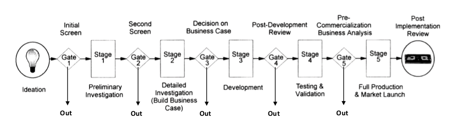
Gates include: Proposal review, revenue-model review, research and feasibility, development progress, ...
Gatekeepers are: upper management, external stakeholders (not project members), experienced project managers, business development officers, people without ownership bias
Implementing Innovation: People Management
Motivating people for the actions in respect to (social) recognition and (financial) rewards:
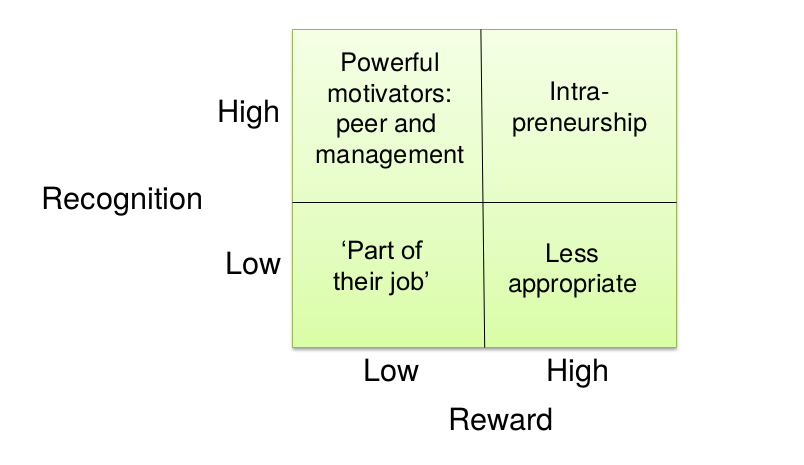
Since the organization is made up of teams and teams are made up of people, it is important to cascade the motivation's and goals of the organization down to the people, as they are the ones who make the achievement of the goals possible. It is therefore important to align the organizations goals with those of the employees through incentives, recognition of effort, payoff or other tools.
Evaluating the Innovation Process: Innovation Audits
Maturity stages of the NPD Process
- No process
- resource conflicts, no documentation, rules of thumb
- Process defined but not used / known / good / accessible
- often ignored, seen as burden
- Process used and understood, good for consistent NPD projects
- process understood, visible and used
- Continuous Process Improvement: Everyone is living it
- meta-process reviews, metrics based, process is in cultural DNA of company
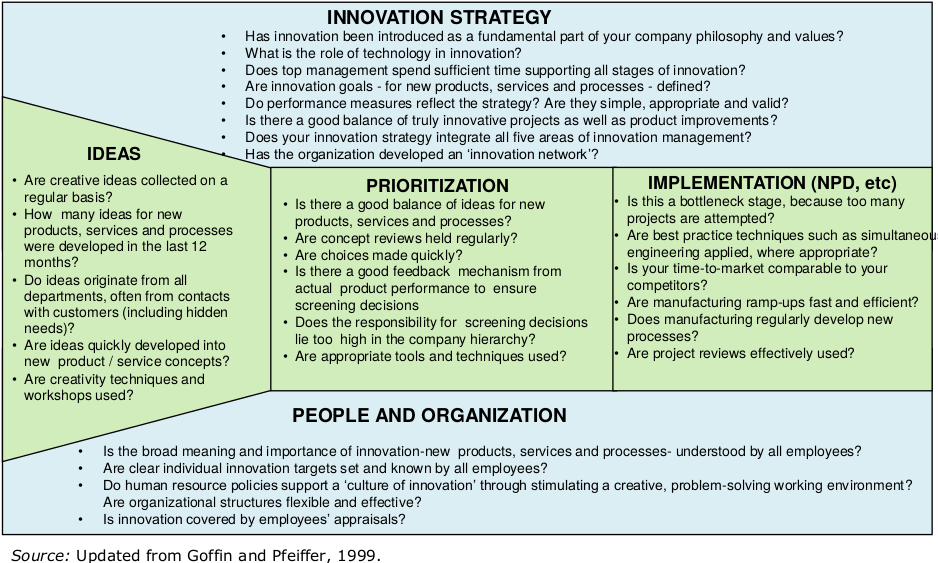
- Ideas
- source, quality, count of ideas, are they followed up on?
- Prioritization
- balance between types / departments / offerings
- reviews, filtering, benchmarking, feedback
- Implementation
- pipeline clogged? benchmark to competitors, process optimized, reviews focused
- Innovation Strategy
- role of technology, top management inclusion, performance measures, innovation network?
- People and Organization
- meaning understood by employees?
- individual targets < -- > company targets
- culture geared toward innovation
Case: Accelerating Innovation through Collaboration
This part focused on ROTO, a company working on top hung pivot roof windows aka Dachfenster. The status-quo (before the project) was a central Lean Manufacturing Management system with digital visualisations of all projects, dependencies between systems and activities etc. While this was geared towards metric collection and dependency graph analysis, it wasn't tuned towards human use. The solution was to disregard the digital system and move towards a paper based in-office board system depicted below
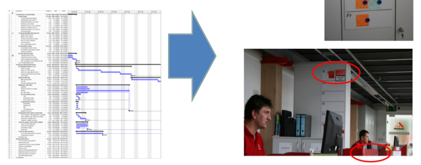
The new system was based on the following principles:
- rigorous stage-gate planning
- red-card signals to call for help by project members
- change in culture, encouraging collaboration
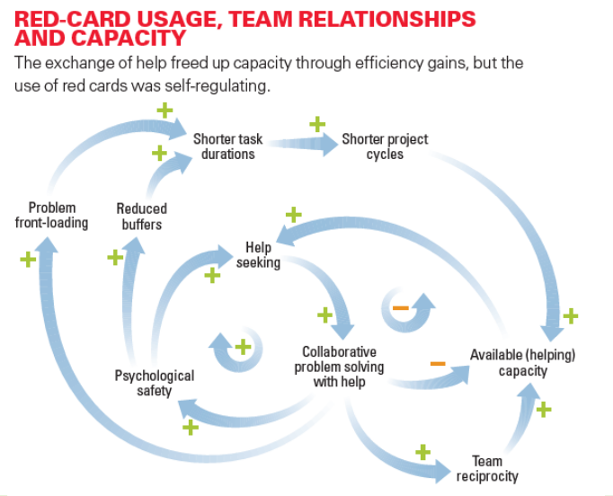
Was the digital model bad? Not necessarily. But while it collected data about progress, the usability of the interface was not necessarily good or enjoyable and the current progress of projects and the visibility of issues was not high. An alternative could have been to place displays with clear, distilled status information on the walls instead of the paper boards. But the question of expense-utility needs to be answered. It is quiet expensive to customize such tools while a company of 30 engineers might be just fine with a paper based approach without the ability to perform high-level analysis on it. Larger companies might on the other hand benefit from such digitally based systems.
Effectiveness of PM is not only driven by 'technical sophistication' of planning tools. The tools need to fit the requirements by the group who uses them.
Review Questions
- Why does a process view help in the implementation of innovations?
- Because, while each project is unique in its challenges and focus, all projects follow the same meta-process and are prone to similar challenges. Hence, a process view of the project progress helps to increase quality by avoiding common pitfalls
- A typical concern is “in our company every innovation is different, so measurement of innovation is elusive”. How would you counter that concern?
- While every project is different, they all have similar challenges on a meta-level: competitor performance, cost, time-to-market, expected revenue \(\delta\), third-party evaluation of proposal, development progress, forecasted velocity vs. actual velocity
- Why can “strategy cascading” enhance the implementation of innovations?
- Because alignment of the firms goals with those of the individuals (or rather the other way around) is essential to have every individual work towards a similar goal. If individual A is incentivized to block innovation because its personal utility is higher when blocking it (such as keeping a job, gaining more money), innovation is blocked from within
- How can “project-kill” decisions create value in a stage-gate process?
- by avoiding future costs that exceed utility. By avoiding sunk-costs fallacies by stakeholders and cutting losses
- Why does an NPD process of highest maturity require regular process reviews?
- Because an innovation process in itself is not immune to change and needs to be updated to stay effective. If process X is valid for the NPD pipeline in 2000, it might be outdated in 2017 when new technologies, partners, strategic goals and other input values are changed.
- Why is effective collaboration and communication among R&D employees crucial for the implementation of innovation?
- Because not everyone knows everything. Tapping into knowledge of other employees can save significant hurdles and also spawns creativity by getting outside opinions, new approaches to problems and often simple solutions with tools that the employee in question didn't know about.
- How can a “red card process” of help create value for the firm? How could it lead to disadvantageous behavior from the firm’s perspective?
- It can help by helping employees get over blockades faster by seeking help and skills from others. Employees also share knowledge among each other and teach each other essential tools (while teaching also fosters learning in the teacher). It can be disadvantageous, if too many junior employees block the productivity of key employees who drive the innovation process value by having them constantly help and in return never manage to work on their own problems. This can be resolved in two ways: A, ensure only skilled/high potential personell is hired and unskilled personell is let go as not to block the seniors and B avoiding excessive churn in employees.
Chapter 7: Supply Chain Innovation “Classics, Trends, and Hypes"
Forces of Innovation (typical name 5 exam question) - information - Big Data making use of information - Artificial Intelligence making use of - Mobile - Cloud Computing - Social (digital)
Gartner called this the "Nexus of forces" in 2014
Supply chain innovation “classics”
Dimensions of Supply Chain Innovation (triangle of influence):
- Supply Chain (Business) Processes
- Supply Chain Technology
- Supply Chain Network Structure
Taylorism describes a methodology according to Taylor that originates in the early 20th century. It breaks down works into many small fragments which don't require complex skill-sets and reduces learning time. This enables a well designed factory filled with unskilled labor to create complex machinery, controlled and steered by a different class of workers, the work-planning "Management" class.
Toyota Production System (1990s)
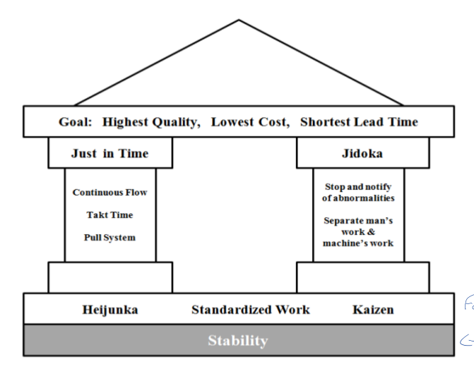
Amara's Law
“We tend to overestimate the effect of a technology in the short run and underestimate the effect in the long run.”
Gartner’s hype cycle of emerging technologies
The hype cycle is made up of two separate developments: The Hype and the Maturity of technologies. As businesses and individuals are looking for the "next big thing", certain technologies get hyped as they appear on the market and lots of information is being spread about them in news, media and discussions. According to Amara however, the technology impact is overestimated in the beginning and so many hyped expectations result in a "Through of disillusionment" as the results cannot make up to the expectations. In the long run, the excitement dies down but the quality of the technology continuously improves and becomes mature.
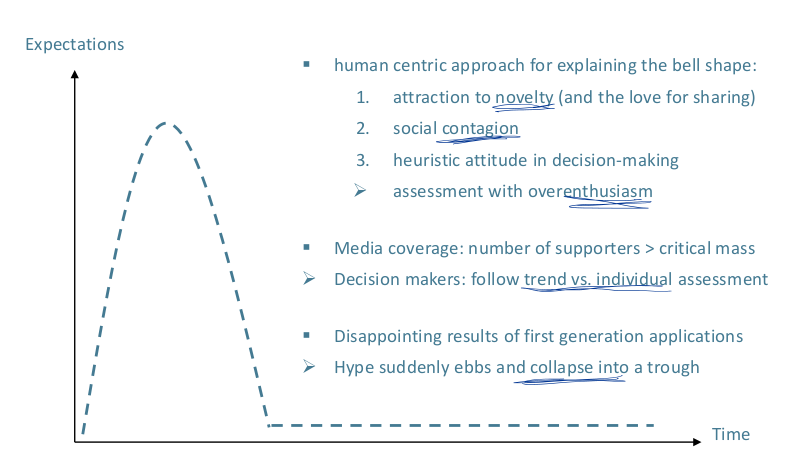 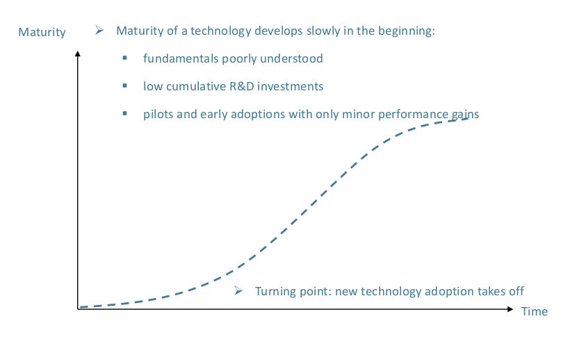 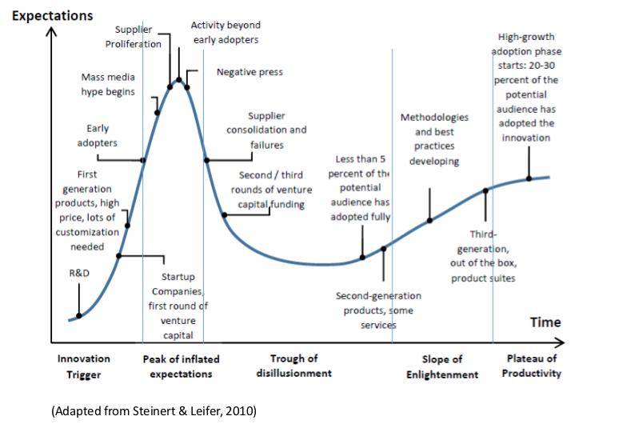 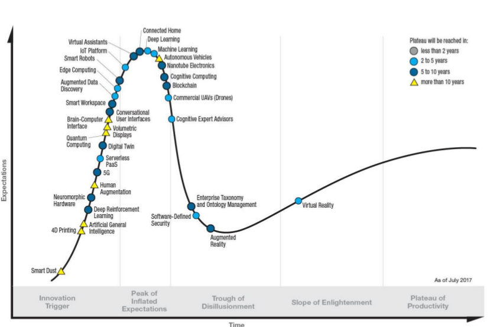
Review Questions
- Describe a supply chain example that illustrates the convergence and mutual reinforcement of social, mobility, cloud and information patterns visualized by the “Nexus of Forces”.
- Amazon: We share our new purchases on Instagram, Facebook etc, purchase them quickly and often on mobile devices, extend the functionality of those purchases with services from cloud offerings (Bluetooth streaming speaker + Spotify) and share all that usage information with Amazon which in turn analyzes it and understands better, what we are likely to buy next.
- Which three dimensions characterize supply chain innovations? Describe a supply chain innovation that illustrates their interconnectedness.
- To what extent may the supply chain perspective itself (in contrast to logistics) be understood as an innovation?
- It considers a holistic view on a product, including both the sourcing as well as the customer experience and interaction with the company. Logistics simply focuses on moving goods and information from one location to another but SCM considers potential interactions, cooperations and mutual benefits through interacting and interconnecting with both customers and suppliers.
- Which ideas and concepts compose the hype cycle and what are its major implications?
- The hype-cycle is made up of two separate function terms. One describes the hype of new technologies, which usually occurs in the beginning of the emergence of such technologies. People discuss and share ideas about potential effects of such technologies and get excited about the potential implications. These expectations, often through social network effects, become much more expansive than the actual current state and performance of the technology. Only after a while, when the technology is matured, can it deliver on many of the ideas generated during the hype. However, this often comes too late and the hype tips over into negative press due to unsuccessful projects and reports of low performance. All the subjective performance doesn't however actually impact the objective technology performance and after a while, the combined function value rises again, due to increased realistic reports of the performance of technology.
- How can hype cycles be measured and in what data can they be tracked?
- Hype cycles can be measured through news outlets, sentiment analysis in text mining and research as well as project reports linked to the technologies referenced in the cycle.
Chapter 8: SCI & Big Data
1. Problem statement & relevance
“You can’t manage what you don’t measure.”
- Information as the driver for decision making on all levels
- data growth is exponential
- Challenge: Identify and extract relevant information, make good decisions upon them
Big Data 6V's
- Volume
- Variety
- Velocity
- Veracity
- unreliable, misleading, biased, false information
- Variability
- Value
- enrichment necessary to extract the valuable parts --> comparable to gold-mining
2. Big Data in SCM research
- Picking up in recent years (2012-2016 from 0 to 600 articles)
- Using publicly available data (Twitter/ Google Trends) to predict and monitor vs performance of old-school organizations
Case-Study: Otto + Blue Yonder
- Otto used deep supervised learning to improve its automated replenishment decisions.
- input
- Internal: POS, Products, Locations, Promotions
- External: Weather, Day, Dates, Holidays
- output
- Forecasting of demand per product per day
In the next step, Otto then uses the forecasts to derive the optimal replenishment orders, which are constrained by some factors (capacity, delivery delay, min/max order quantities).
- Data-Driven decision making increases visibility and transparency
- Many factors, adding to a 0.72 coefficient of determination
- Production analytics most valuable (cost?)
- Analytics of plan 2nd (but abstract?)
- IS systems support strong moderator <-- enabler
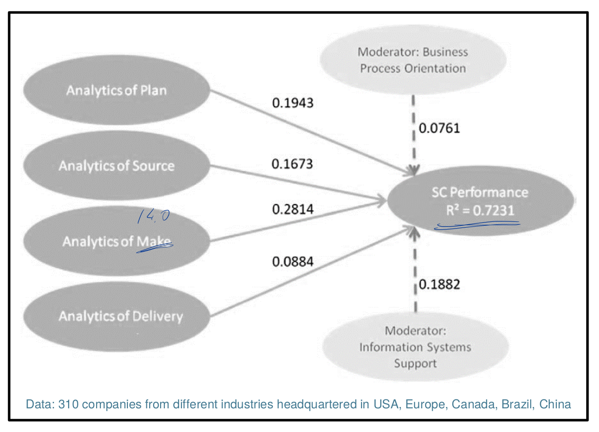
Adoption
Not everyone adopts. Why?
- Not aware / too busy with day-to-day ops
- internal blockades
- culture of privacy
- no IS competency
- mismanagement
- costly data sources
- external blockades
- regulations / local laws
- partners not sufficiently digital
- Looking for goal first
- firm doesn't want to collect information without reason
- can't see problems until you measure it
- but want problems visible before taking action
3 Stages of adoption:
- Aspirational
- want to be analytic but just use data to justify
- Experienced
- Transformed
- use analytics to determine action
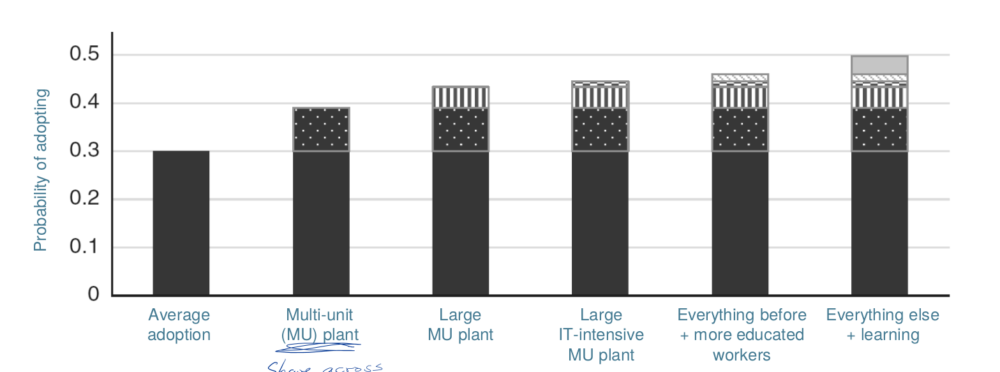
Who adopts? 0.3 adopt, but there are types of firms more likely to adopt: - larger / multi-location - IT-intensive / digitalized - educated & learning centered
Managerial implications
HiPPOs: Highest-paid person's opinions - Reducing the intuition based decision approach with rank overruling rationality towards data-driven and critically reflected decisions
It's important to ask the right questions, not give authoritarian answers
3. Opportunities and challenges
Mixed capabilities
- Claim: \(H+M \leq M\)
- Why? Who has final decision power? Does human input ideas or have final decision?
Data quality
Trash in Trash out
Data has several dimensions of correctness that are required: - accuracy (of measurement / data) - timeliness (of delivery) - consistent (formatting) - complete (of records)
Review questions
- With which six V's may the term "big data" be characterized? Please illustrate each V with an example.
- According to research findings, what is the impact of Big Data on firm performance?
- The space can explain about 0.6 of the variance in the measured firm performances
- Why don’t all firms adopt the new technologies? Who adopts and who doesn’t?
- firms with internal / external blockades
- firms that are too late to the party (i.e. adopt as reaction to competition)
- firms that look for a reason to implement don't just want to "collect data for the sake of collection"
- Given the particular strengths & weaknesses of computers vis-à-vis humans, how to best mix their capabilities for e.g. new product development?
- Let humans focus on their skills while making machines perform repetitive and error-prone tasks
- What type of decisions mandate, in your opinion, to rely on data respectively on intuition? Please describe typical characteristics.
- Data: Opening a new remote office to be close to the customers --> perform customer analysis instead of going with the big hubs
- Intuition: Design decisions for product design (as long as the design cannot be field-tested and data collected)
Chapter 9: SCI - Virtual and Augmented Reality
Foundations: terminology & technology
- Immersive: Sensory input, as far as possible, genrated by the digital systems
- 3D
- Interactive
- Multi-Sensory: Linked to Immersive --> audio/visual/haptic/...
- Viewer-centered: POV technology using headsets
The approach towards AR/VR is the idea to be a more natural and less metaphor based approach towards HCI. There is a continuous transition from pure reality to pure virtuality, with several degrees of augmentation. Simple tools such as handhelds can offer a "window into the virtual world" while head-mounted display overlays offer a more natural and hands-free approach. Concepts such as the cave (UTS Sydney) offer a virtual environment without on-person gear using projector based technology.
Basic functionality required for AR applications according to DHL:
- Scene capture
- Scene identification
- Scene processing
- Scene visualisation
Impact: business use cases
- Real-estate / sales
- Planning, Engineering and Design
- Mechanical work support such as packing, assembling and repair
- education and training
- visualization and data exploration
Summary, outlook & discussion
Does AR/VR belong to the incremental, radical or breakthrough technology degree of innovation?
- The overall concept of having a digital simulation of a physical environment should be considered breakthrough. However, AR/VR is not the concept of a digital model itself but rather the human interaction with this model redesigned to be more intuitive and oriented towards human sensory input.
Some use-cases such as on-demand repair support is therefore a rather incremental improvement to call based support or even video support through video conference tools.
The ability to expose a model of a house / plane / car to a customer and letting the customer customize it in virtual reality before receiving the final product is a radical improvement. It significantly reduces the probability of customers claiming a product was "not delivered as specified", which is often simply caused due to miscommunication.
Digital Twin reading (Economist 2017)
1. In what ways do “Digital Twins” differ from current supply chain optimization and simulation models?
Current models are academic abstractions and hypothetical models that conceptualize the overall chain. Digital twins on the other hand are highly complex simulations of any machine, module, person or machinery that is involved in the manufacturing process of a factory. Such a system therefore offers a much more fine-grained resolution of how certain changes in the system affect other moving parts. While classical SC models and simulations include either simply academic concepts or simplified simulated systems represented by functions, the digital twins are constructed "bottom up", basing each simulated part on the realistic specifications of the manufacturer or the measured output of real-world objects.
- In what ways can the “Digital Twin” approach combined with AR and VR?
A digital twin that doesn't only include conceptual variables (such as output per minute, failure likelihood, maintenance intervals) but also an accurate, 3D model of the object itself can be easily used to render a POV camera inside of this virtual environment which can then be explored and adapted accordingly. In such environments, the simulation very quickly reaches several layers of complexity. The conceptual level (representations of machine performance, output etc), the visual representation (the machine working, grabbing objects and manipulating them) and the actual real-world object in question.
- What benefits can be expected from digital twins?
- Accurate predictions of behavior
- simulations offering parameter changes insights
- problem symptom diagnosis
- easier integration (and possibility check) with outside systems
- What drawbacks of the “Digital Twin” technology might be relevant for companies and supply chains?
- costs
- complexity
- possibility of blocking possible partners from cooperation due to lack of digital-twin implementation
Review Questions
- Define what virtual reality is and explain its basic characteristics.
- a computer generated set of sensory input signals that cause the human brain to interpret it as a coherent, immersive virtual environment which reacts to human manipulation through input devices and allows for intuitive interaction with digital assets
- What is the key difference of augmented reality (in comparison to virtual reality)? In answering, utilize Milgram’s (1994) mixed reality continuum.
- Augmented reality does not completely block out the real environment of the actor but rather overlays the real stimuli of the actor with digital artifacts such as noises, objects or haptic feedback. At least some part of the physical environment stays noticeable however and often one of the key values of AR is the combination of already existing objects and digital additions that seem to interact with the physical objects.
- Using virtual and augmented reality technologies, at which points of the supply chain process may the customer be integrated? What would the key advantages be?
- The customer may be integrated at any point. Early in the SC for educational purposes or for sharing insights and offering transparency and at any point, the customer might give feedback to the supplier based on what he/she observes. Such input may be helpful in adapting processes and material handling but it will also increase the happiness of the customer, as he/she can precisely define additional requirements.
- What are the key advantages of augmented reality technologies in assembling and training environments? How may this impact supply chain network structures?
- AR tech offers the support of human motor skills and complex, creative task solving ability with the precision and fault-tolerance of machine sensory input and statistical analytics. It can help construction workers ensure each work step is performed exactly as specified and therefore increase quality and safety. Training environments are more immersive, closer to reality and allow the trainee to become more accustomed to the target environment rather than simply learning through text or image material.
- Given the advantages of virtual and augmented reality for the product development process: does corporate culture need to be adapted, too?
- Culture less so, but work processes, tools and user skills need to be adapted and improved. If the culture of the company has not yet included the inclusion of their customers into the design process, then of course, they need to start working on their processes, but it is more likely that such companies will have other problems than trying out AR (such as bankruptcy and outperforming competitors). Listen to your customer man!
Bonus Chapter: BMW Guest Lecture
- Car industry hasn't seen change in business model in over 100 years
- Lifecycle of new models are longer
- Integration of new tech very modular and supplier driven --> Business as usual
- strong supplier driven innovation, big brands just stitch together
- hence, strong Supply-Chain-Integration with partners
- Car-sharing: Becomes first business-model shift
Innovation trends in the automotive industry
- Sensor systems, AI, precise world-model
- sensors fuel both others, world-model enables performance of AI
Tutorial 1 - Types of innovation and innovation strategy
1. What is innovation and in how far may it conceptually be delineated from invention and creativity?
- innovations don't need to be new, merely perceived to be.
- innovation also includes the implementation, simply coming up with something without creating a market-ready final product/service is simply considered a creative work
- is both organizational learning and R&D
- doesn't need to be a disorganized process but should much rather be controlled, supported and managed
2. What need is driving adidas with the “speed factory”? On what dimensions and to what degree does adidas innovate?
- fast turn-around of new product designs
- quick restocking of highly popular and high-margin products
3. Provide an example for an organization caught in the “Incremental Innovation Trap”. Why did that organization get caught in there?
- Nokia, Blackberry, Kodak
- they all got trapped there, because they were either market leaders or pseudo-leaders, meaning they lead in their respective subfield. Nokia didn't look for new, innovative ways of completely revamp their operating system and model. Apple however offered both a platform for developers to earn money as well as offering customers a widely different user experience. Kodak failed to recognize the shift in the technologies towards digital cameras instead of film based ones.
- Why?
- lack of skill-set
- risk aversion
- market orientation and focus on current winning market
- focus on cost efficiency
4. How do product innovation, process innovation and business model innovation interact? Please describe a vivid example from business practice.
- highly dependent on product in question: How complex, ease of imitation, reliant on brand vs. function
- can be interdependent and fuel each other --> new processes offering higher margins, leading to bigger budgets for R&D or marketing
- VW example: manufacturing change --> cheaper repairs --> higher margin + cheaper insurance premiums --> more competitive
5. Explain commonalities and differences of product innovation against process innovation by using the generic innovation funnel.
| often require new production processes |
Organizational change of how activities are ordered or structured |
| new products often require new purchasing / marketing |
incur introduction lag / time until employees adapt |
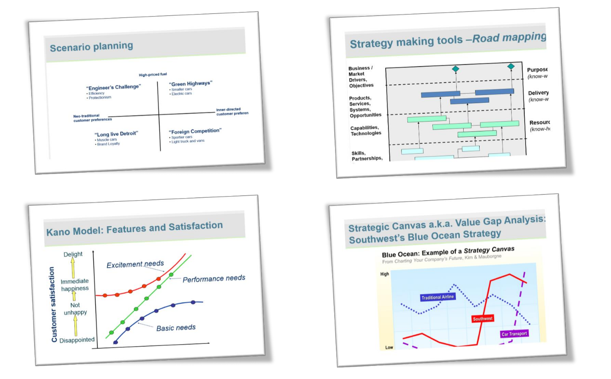
- Scenario Planning: Picking several dimensions of potential future developments and combining them to construct action plans helps to evaluate which are the best actions that support the most scenarios
- Kano Model: Categorizing features into basic, performance and excitement needs and mapping them to customer satisfaction. Basic needs follow a \(\log{x}\) distribution. Performance are mostly linear (meaning +5 performance leads to +5 satisfaction) and excitement needs follow an \(x^{1.5}\) distribution, as reasonably strong excitement pleasing features lead to an inflated satisfaction reaction
- Road Mapping: Plotting phases dependent on different skills/challenges --> overview of future project structure and dependencies
- Strategic Canvas: Visualizing strengths/weaknesses of competitors and own firm, giving overview of power distribution in the market
7. What is the conceptual difference between technology S-curves and diffusion curves? And what is the relation between diffusion and adoption curves?
- s-curves: technologies often take time to sufficiently perform. Once the R&D investments start to pay off, the performance increases rapidly until the underlying technology hits a physical barrier or if the product becomes obsolete and R&D investments get cut off
- Emerging, Pacing, Key, Base
- diffusion curves: x = time, y = % of adopters, CDC = integral of diffusion curve
8. What are the characteristics of a disruptive innovation? Give an example.
- A technology / process / model that addresses a different subset of performance criteria or a different group of customers.
- established tech satisfies all requirements in major dimensions but doesn't pay attention to possible other dimensions that customers value
- Initially under-performing but quickly improving with a higher velocity than the preexisting base technology
- overpassing previous technology and allowing new products to surpass previous ones
Tutorial 2: Generating and protecting innovation ideas
1. What is the most innovative product you have experienced and how do you think the idea for this emerged?
- the computer: While it is usually believed that Alan Touring invented the computer, it was actually a process that took mathematicians many decades and can be dated back to anything between 1833 and 1940. However, once the technology existed, it revolutionized one industry after another. An obviously innovative process was the cracking of the enigma codes, which allowed the UK and other allies to win the war significantly earlier. While this wasn't a "free market" innovation, it surely was superior to the competition and gave a significant advantage
2. How does, ceteris paribus, an increase in number of ideas generated affect the quality (i) of the best idea and (ii) of an average idea? Explain.
- Up to a certain extend, the increase of ideas generated will also push the probability of the best idea being of higher value, assuming the distribution of idea quality is somewhat resembling a normal distribution.
- Whether the increase of the number of ideas changes the average quality depends on what is considered by "ceteris paribus". If the expected average quality stays the same (i.e. if we are not adding all the bad ideas that haven't been proposed but see each new idea quality as a function of \(\mathscr{N}(\mu, \sigma^2)\)).
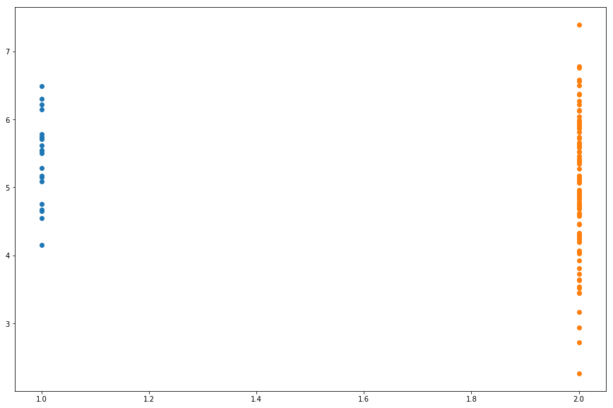
However, as we increase the number of additional ideas, the likelihood of getting another even better idea is converging towards 0, as the average quality remains the same.
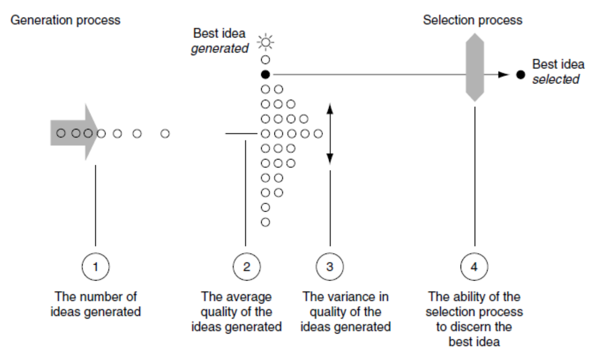
3. How can hybrid structures help overcome problems with traditional brainstorming? (Use two problems of the traditional approach).
- Groupthinking: The overall number of ideas generated by the group is smaller than the sum of all individually generated ideas (despite removing duplicates). This is due to the effect of groups thinking along the same path, following one storyline instead of each exploring their individual idea path
- Speed of idea creation: As the whole group is required to follow social protocols and people are not able to listen to 10 people talk at the same time, the overall process takes much longer to generate the same number of ideas
- Freeriding
- fear of judgement: Social factors
4. Provide an example for the lead user approach and explain why the respective company focuses on extremely demanding customers instead of average customers.
- Gaming hardware for PC components: Everyone wants to be a pro gamer, similar to normal sports equipment (such as Basketball shoes)
5. How does the lead user approach incorporate “normal” users?
- Each user is usually highly skilled in a subset of the overall performance dimensions. Therefore, while lead user A might push the boundary on performance measure A, he will keep user B in check for PM B, if he requests unnecessarily complex additions
6. What elements and factors need to be considered when developing a patenting strategy?
- Position in the market
- competition type
- type of technology (ease of replication, ease of patent circumvention)
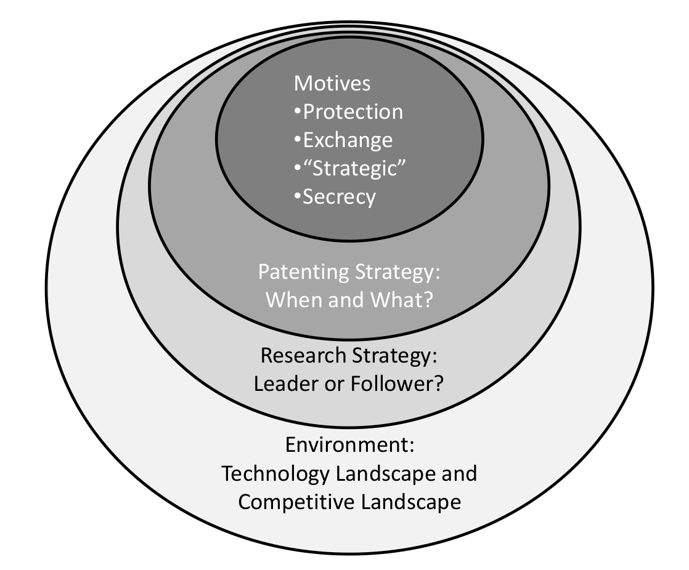
7. What are the basic trade-offs in patenting?
- cost
- exposure to competition
- risk of copycats
- protection of IP
- ability to license
- time until patent accepted
8. When and why may “High-quality Patenting” backfire?
- when the competition is in a "follower" position while I am the leader or when I am competing with an equal foe who patents everything
- the follower copies my high-quality patents by slightly adapting and then working on top of my work
- the equal competitor can use my work and his R&D but claims everything while I only claim some products
Tutorial 3
1. Idea selection: quantitative methods (see assignments on the following slides)
- using real options and decision trees
- investing small amounts to position ability to continue
- at different stages, evaluate future likelihood of success based on latest information and invest, if net-value is positive
2. At what stage of innovation are qualitative (resp., quantitative) innovation evaluation methods more adequate? Explain why.
- Early selection of ideas: qualitative. It is much easier to judge a large number of ideas simply on the idea itself rather than perform a feasibility and cost analysis for each idea for all possible future scenarios.
- very early phase: Tournament style. But risk of having an unfair looser, meaning you loose a great idea because of factors not related to actual idea worth
- with final selection of to-pursue ideas: Quantitative evaluation of each idea
3. What are advantages and disadvantages of using innovator knowledge for process idea evaluation and selection?
| knows idea the best, important source of information |
potential systematic bias towards positively evaluating idea value |
4. What is the logic of applying “Strategic Buckets” to Innovation Management? Explain the approach.
- Concept tries to help with balancing investment portfolio across different key strengths of firm. This can be product types or innovation areas (process, product, business model)
5. A typical concern is “in our company every innovation is different, so measurement of innovation is elusive”. How would you counter that concern?
- That every company faces this issue (as innovation is inherently different from previously known approaches) but yet others manage it well
- while innovations cannot hardly be compared, they can be evaluated for themselves --> is this innovation going to last
- using estimates of multiple experienced decision makers gives good probability distribution estimates
6. Why can “strategy cascading” enhance the implementation of innovations?
- top-level goals of firm don't need to be necessarily the same as individual goals of employees
- for a firm to be successful, it is best if all parts are aiming towards the same direction
- aligning individual goals with firm goals (through incentives) is therefore advised
--> see game theory and incentives for agents to act alongside the designed environment goals
Glossary (Terms summary)
Here is a collection of terms you should just know. Mostly, they are linked to some part of the text.